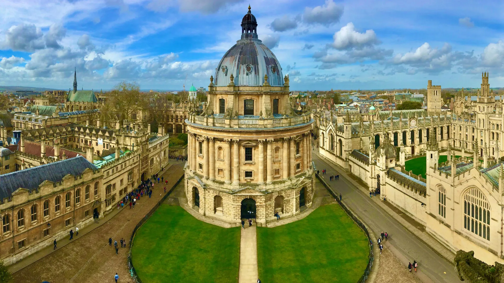
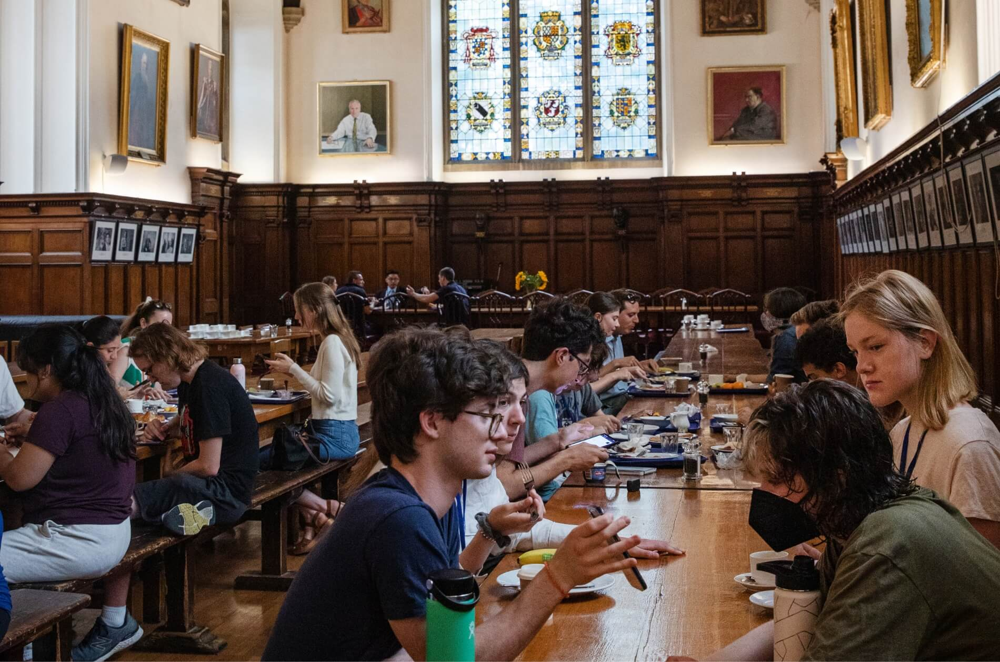
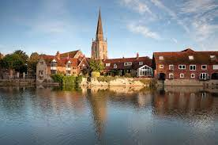

University Blog
5 Reasons Why Oxford is the Best University
Oxford University is one of the world’s oldest and most prestigious academic institutions. With its exceptional academic resources, rigorous programs, and a rich cultural history, it offers an unmatched experience for students. Here are five reasons why Oxford is considered the best university:
1. Rich History and Tradition
Oxford has been at the forefront of higher education for over 900 years. Its history and traditions are deeply embedded in its culture, from the iconic colleges to the unique tutorials system that promotes close student-teacher relationships.
The University of Oxford, established around the 12th century, has evolved to become a symbol of excellence and a center for academic pursuit. Its medieval buildings, libraries, and landmarks like the Bodleian Library and Radcliffe Camera contribute to the university’s rich historical fabric.
2. World-Class Faculty
Oxford attracts some of the brightest minds in academia. Its faculty includes Nobel laureates, leading researchers, and practitioners who shape the future of many fields. Students have the chance to work with experts in their disciplines.
3. Global Reputation
Oxford’s reputation is globally recognized, with its graduates excelling in a variety of fields including politics, law, business, science, and arts. The university’s alumni network is one of the most influential in the world.
4. Diverse and International Community
Oxford is home to students from all over the world. With over 140 nationalities represented, students benefit from a diverse environment that encourages collaboration and broadens their perspectives.
5. Exceptional Research Opportunities
Oxford’s commitment to research is unparalleled. Students have access to cutting-edge labs, resources, and opportunities to contribute to pioneering research projects across multiple disciplines.
Student Life at Oxford

Student life at Oxford University is truly unique. Beyond the rigorous academics, students enjoy a wide range of extracurricular activities, clubs, and social events. Here's what makes student life at Oxford unforgettable:
1. The Oxford College System
Oxford is made up of more than 30 autonomous colleges, each with its own community, traditions, and facilities. The college system fosters a tight-knit environment where students not only study but also form lifelong friendships. Each college has its own dining hall, library, and social spaces.
Each college operates as a separate community with its own administrative system, but they all contribute to the broader Oxford University experience. College members meet regularly for formal dinners, discussions, and social events.
2. A Hub for Extracurriculars
From rowing and cricket to debating and drama, Oxford offers a plethora of extracurricular activities. The university has over 400 clubs and societies, so there’s something for everyone, regardless of interest or passion.
3. Beautiful Surroundings
Oxford’s picturesque campus, with its historic architecture, beautiful gardens, and the famous River Thames, provides students with an inspiring environment to study and relax. The city itself is vibrant and steeped in history, with everything you need within walking distance.
4. The Unique Tutorial System
One of the hallmarks of Oxford is its tutorial system, which allows students to engage in one-on-one or small group discussions with tutors. This encourages independent thinking and offers students personalized attention, making learning highly interactive and immersive.
5. Supportive Community
Despite the challenging academic environment, Oxford offers a strong support system for students. From academic advisors to counseling services, the university ensures that students have access to the resources they need to succeed both personally and academically.
How Oxford Prepares You for Your Future Career
Oxford University not only offers an outstanding education, but it also prepares its students for successful careers in various fields. Here’s how Oxford helps students transition from academic life to professional success:
1. Strong Alumni Network
Oxford has one of the most powerful and far-reaching alumni networks in the world. Graduates go on to occupy leadership positions in politics, law, business, technology, and beyond. Students benefit from this network, as it offers mentoring, career opportunities, and connections across industries.
2. Career Support Services
Oxford provides extensive career services, including career counseling, workshops, internships, and networking events with top employers. These services are available to students and alumni, ensuring they are well-prepared for the job market.
3. Entrepreneurial Opportunities
Oxford encourages entrepreneurship and innovation. The university has a number of programs and initiatives, such as the Oxford Foundry, which supports students who want to start their own businesses. Oxford's rich ecosystem fosters creativity and entrepreneurial thinking.
4. Internships and Work Placements
Oxford has partnerships with a wide range of industries and organizations, providing students with internship and work placement opportunities that give them practical experience in their fields. These placements often lead to full-time job offers after graduation.
5. Developing Transferable Skills
Throughout their time at Oxford, students develop critical thinking, problem-solving, communication, and leadership skills. These skills are highly valued by employers and are applicable across many different career paths.
Famous Oxford Alumni Who Changed the World
Oxford has produced some of the world's most influential and successful individuals. From political leaders to groundbreaking scientists, Oxford alumni have left an indelible mark on history.
1. Sir Winston Churchill
Winston Churchill, the former British Prime Minister, is one of Oxford’s most famous alumni. Known for leading Britain through World War II, his leadership and oratory skills continue to inspire generations.
2. Stephen Hawking
The late Professor Stephen Hawking, one of the most famous theoretical physicists in history, was a professor at Oxford University. His groundbreaking work on black holes and cosmology has shaped modern science.
3. J.R.R. Tolkien
The author of "The Lord of the Rings" and "The Hobbit," J.R.R. Tolkien, was a professor at Oxford. His works have captivated millions of readers around the world and have been adapted into successful films and other media.
4. Indira Gandhi
Indira Gandhi, the first female Prime Minister of India, studied at Oxford. Her leadership in shaping India’s political landscape has had a lasting global impact.